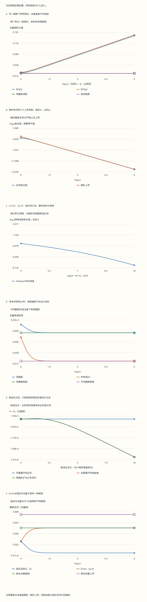

本页目录
场论计算桥 02 · 圈积分与减除：算清有限部分，再比较误差
先修：多元积分、Feynman 图、外腿截肢。目标：亲手完成一个四维欧氏泡图积分，说明减法条件如何确定有限部分，并区分截断、数值积分和微扰截阶。所有动量与质量使用同一单位，\(m>0\)。
1. 先明确计算对象：一个欧氏积分能回答什么
考虑形式上的标量泡图积分
这里 \(Q\) 在写成标量时表示欧氏外动量的长度，\(Q^2\ge0\)。积分尚未加入顶点、对称因子和三个散射通道；本讲直接研究这个欧氏对象，不证明 Minkowski 积分的 Wick 转动，也不计算实验截面。正质量使分母保持正值，红外奇点和实时间阈值不在本模型内。
大动量时，四维径向测度贡献 \(\ell^3d\ell\)，两个传播子贡献 \(\ell^{-4}\)，所以尾部像 \(\int d\ell/\ell\)。这说明要处理对数发散，却还不知道有限部分、动量依赖和参数定义。接下来把这三项实际算出来。
量纲检查。 测度的质量维数为四，两个分母合计也为四，故 \(B\) 无量纲。对数中的自变量必须是质量平方之比，不能直接写有单位的 \(\log\Lambda\) 而不说明参考尺度。
2. 合并分母，然后明确截断区域
对于正数 \(A,B\)，
当 \(A\ne B\)，直接求原函数 \(-1/[(A-B)(B+x(A-B))]\) 并相减端点即可；当 \(A=B\)，被积函数就是常数 \(1/A^2\)。这是本例需要的全部 Feynman 参数化。
取 \(A=\ell^2+m^2\)、\(B=(\ell+Q)^2+m^2\)，令 \(k=\ell+(1-x)Q\)，配平方得到
本课在平移后定义正规化处方：对每个 \(x\) 取 \(|k|<\Lambda\)。 如果原先已经规定 \(|\ell|<\Lambda\)，平移后边界一般不再是以原点为中心的同一个球。不能悄悄把两个有限积分当作相同。本课明确采用前一种处方，也不声称这个简单截断自动保持规范对称性。
四维单位三球的面积是 \(2\pi^2\)，所以
练习 1 · 为什么角因子是 1/(8π²)，不是 1/(16π²)？
从测度得到的是 \(2\pi^2/(2\pi)^4=1/(8\pi^2)\)。下一步径向代换还会产生 \(1/2\)，两者合起来才成为 \(1/(16\pi^2)\)。把两个来源分开，能避免在泡图系数中无意多乘或少乘二；它与另外的图对称因子又是不同问题。
3. 把径向积分算到有限常数
记 \(I(\Lambda,M)=\int_0^\Lambda k^3dk/(k^2+M^2)^2\)，令 \(u=k^2+M^2\)。因为 \(k^3dk=(u-M^2)du/2\)，
因此，本课的有限积分是
当 \(\Lambda/M\) 很大时，\(I=\log(\Lambda/M)-1/2+O(M^2/\Lambda^2)\)。常数 \(-1/2\) 是积分的一部分；只有指定参数的减法条件后，才能说明它如何进入参数定义。
例如使用同一质量单位，\(M=1,\Lambda=10\) 时 \(I\approx1.81251\)，只取渐近前两项得到 \(1.80259\)。有限截断余项约 \(0.00993\)，它并没有因为“对数发散已知”而消失。
练习 2 · 大截断下 I(2Λ,M)−I(Λ,M) 趋于什么？
趋于 \(\log2\)。相减时常数抵消，对数给出 \(\log(2\Lambda/M)-\log(\Lambda/M)=\log2\)，固定 \(M\) 的余项趋于零。这里比较不同截断的同一个积分，还不是同截断下两个外动量点的减除。
4. 同一截断下相减：有限部分由减法点确定
定义 \(B_{R,\Lambda}(Q;Q_0)=B_\Lambda(Q)-B_\Lambda(Q_0)\)。两项采用同一质量、参数化和截断处方。固定 \(m,Q,Q_0\) 后令 \(\Lambda\to\infty\)，
可以立即检查三点：\(B_R(Q_0;Q_0)=0\)；交换两动量使结果变号；\(Q>Q_0\ge0\) 时结果为负。减法保留了动量依赖，并非把整条曲线“减成零”。

一个可直接计算的闭式帮助我们独立检查数值求积。令 \(a=Q^2/m^2\)，定义
在 \(a=0\) 处连续取 \(J(0)=0\)，于是 \(B_R=-[J(Q^2/m^2)-J(Q_0^2/m^2)]/(16\pi^2)\)。用 \(x=(1+t)/2\) 把 \(x(1-x)\) 化成 \((1-t^2)/4\)，再积分对数二次式，可推得这个闭式；对闭式微分，也能与 \(\int x(1-x)/[1+ax(1-x)]dx\) 核对。
小 \(a\) 时不应直接用两个接近一的数相减。级数 \(J(a)=a/6-a^2/60+O(a^3)\) 保留了真正的小量。实验在小参数处分支计算，避免把消去误差当作物理结论。
练习 3 · Q₀=0、Q远小于m时，求前两项并判断符号
用 \(\log(1+y)=y-y^2/2+O(y^3)\)，以及 \(\int_0^1x(1-x)dx=1/6\)、\(\int_0^1x^2(1-x)^2dx=1/30\)，得到
最低阶为负，与原积分的单调性一致。要求的是 \(Q/m\ll1\)；不能固定非零 \(Q\) 后把这条展开用于 \(m\to0\)。
5. 解析截断误差和求积误差分别有多大
令 \(M_{0x}^2=m^2+x(1-x)Q_0^2\)，\(d_x=M_x^2-M_{0x}^2\)。有限截断余项 \(E_\Lambda=B_{R,\Lambda}-B_R\) 可以稳定地写成
这个表达式直接计算小差，而不是从两个大的发散量中硬减出极小余项。它的符号与 \(Q^2-Q_0^2\) 一致，而且存在解析上界
其中渐近式固定 \(m,Q,Q_0\)。上界是数学公式；页面给出的浮点近似没有做区间算术认证。
实验另用复合 Simpson 法计算参数积分，区间数 \(N=16,32,\ldots,1024\)，端点权重为一、内部奇数点权重为四、偶数点权重为二，再乘 \(1/(3N)\)。每个节点和加权贡献均可查看和下载。我们把求积值与解析有限截断值比较，因此可以单独观察网格误差 \(e_N\)；总误差满足 \(B_{R,\Lambda}^{(N)}-B_R=e_N+E_\Lambda\)。两种误差符号可能抵消，不能只凭总差小就断言每步准确。
默认 \(m=1,Q=2,Q_0=0,\Lambda=10,N=64\)，\(B_R\approx-0.0031213317964\)，\(B_{R,\Lambda}\approx-0.0030386369708\)；截断余项约 \(8.26948\times10^{-5}\)，解析上界约 \(8.44343\times10^{-5}\)，而当前 Simpson 网格误差约 \(9.3177\times10^{-10}\)。这个例子继续细分网格几乎不会改善主导的截断误差。
练习 4 · 推导1/Λ²上界，而不只相信拟合斜率
定义 \(f(t)=\log[(\Lambda^2+t)/m^2]-\Lambda^2/(\Lambda^2+t)\)，则余项被积函数为 \(f(M_x^2)-f(M_{0x}^2)\)。对正 \(t\)，
中值定理给出绝对值不超过 \(2|d_x|/\Lambda^2\)。再用 \(|d_x|=x(1-x)|Q^2-Q_0^2|\) 并积分 \(x\)，乘 \(1/(16\pi^2)\)，得到所列上界。这一论证同时说明余项符号。
练习 5 · 网格细化后两次数值很接近，就得到严格误差界了吗？
没有。相邻网格差是诊断信息；要把它变成认证上界，需要被积函数光滑性和导数界等条件。这里有解析有限截断值，因而直接计算真正的求积差，而不把网格差冒充上界。选“端点变化快，粗网格会漏算”再选“同一积分细分网格”，保持质量、外动量和截断一致，只改变 \(N\)，才是在检查同一个积分的求积收敛。
6. 不同截断和移动动量：两种有意改变条件的实验
先把参考积分的截断改成 \(\rho\Lambda\)，其中 \(\rho>0\) 固定。大截断下
即使两个截断都趋于无穷，偏移仍在。不同处方可以用不同有限参数定义描述同一个物理量，但必须做相应匹配；不能保持参数不变，宣称两个裸数值已经相同。默认 \(\rho=2\) 留下的偏移约为 \(-0.0087788115966\)。
再令 \(Q=\kappa\Lambda\)，同时固定 \(Q_0=0\)、\(m>0\)。定义
代入余项公式得到 \(E_\Lambda\to[J(\kappa^2)+1-K(\kappa^2)]/(16\pi^2)\)，对 \(\kappa>0\) 不为零。固定动量时上界衰减，这时上界却变成常数 \(\kappa^2/(48\pi^2)\)。两者并不矛盾，因为取极限时保持不变的量已经不同。
练习 6 · 从点态被积函数推导移动动量的余项极限
此时 \(d_x/\Lambda^2=\kappa^2x(1-x)\)，\(m^2/\Lambda^2\to0\)。余项被积函数趋于 \(\log[1+\kappa^2x(1-x)]+\kappa^2x(1-x)/[1+\kappa^2x(1-x)]\)。在有限区间上它被可积常数控制，可以交换极限与积分。第二项的积分是 \(1-K(\kappa^2)\)，第一项是 \(J(\kappa^2)\)。这只说明本课积分的这条路径，不是完整场论的紫外完备性论证。
7. 反项与换减法点：必须在同一微扰阶数比较
设单通道教学量 \(F(Q)=g_0+c g_0^2B_\Lambda(Q)+O(g_0^3)\)，其中 \(c\) 是给定的组合系数。规定 \(F(Q_0)=g\)，反解到同一阶，得到 \(g_0=g-cg^2B_\Lambda(Q_0)+O(g^3)\)。将它代回并只保留到 \(g^2\) 阶，再取减除后的截断极限，
反项负号来自所选的参数条件。实验同时列出固定二阶的结果和把截断裸参数直接塞回二次式的结果，后者会带出部分更高次项；并不因此成为完整高阶答案。由于 \(B_\Lambda\) 随截断增长，裸参数级数也不保证在 \(\Lambda\to\infty\) 下一致收敛。
改用 \(Q_1\) 定义参数，记 \(D_{10}=B_R(Q_1;Q_0)\)、\(D_1=B_R(Q;Q_1)\)、\(D_0=B_R(Q;Q_0)\)。对数相减直接给 \(D_0=D_{10}+D_1\)。取 \(g_1=g+cg^2D_{10}\)，两边重展开到二阶，结果相同。
练习 7 · 不重展开，直接代入g₁时多出的差是什么？
定义二次截断式 \(F_0=g+cg^2D_0\)、\(F_1=g_1+cg_1^2D_1\)。代入 \(g_1\) 并展开，
这条恒等式精确描述这两个截断多项式的差；它并非完整理论的三阶和四阶修正。图中同时画直接差、这条多项式和均保留二阶时的差。最后一项仅可能剩浮点舍入，不能把微小浮点残差解释为物理跑动。
8. 如何动手：每次只改变一个要验证的条件
按顺序做四轮：先用默认参数观察两条增长积分的有限差；固定截断细分网格，区分两种误差；改变参考截断比，检查有限偏移；最后换减法点并比较同阶匹配。在每一轮中，先写下预期方向和理由，再展开图表。
默认 \(m=1,Q=2,Q_0=0,\Lambda=10,N=64\)。禁用 JavaScript 时，以下固定样例仍提供数值与完整记录；启用后可调整十一项输入、核对预测并检查全部节点。
无脚本对照：六份固定记录保留全部求积节点、97个截断点和41个减法点。下列误差是有符号的实际数值差；上界约束解析截断余项的绝对值。
| 预设 | Λ | N | 连续极限 | 有限截断值 | 截断余项 | 余项上界 | 网格误差 | 未重展开的匹配差 |
|---|---|---|---|---|---|---|---|---|
| default | 10 | 64 | -0.003121331796 | -0.003038636971 | 8.269482557e-05 | 8.44343197e-05 | 9.317705232e-10 | -5.788288968e-07 |
| mismatch | 100000 | 64 | -0.003121331796 | -0.003121331796 | 8.443431968e-13 | 8.44343197e-13 | 9.318902004e-10 | -5.788288968e-07 |
| quadrature | 10 | 16 | -0.0254971817 | -0.02365919842 | 0.001837983272 | 0.002110857993 | 0.0002911070655 | 2.536936088e-06 |
| matching | 10 | 64 | -0.003121331796 | -0.003038636971 | 8.269482557e-05 | 8.44343197e-05 | 9.317705232e-10 | -0.0002401394652 |
| moving | 100000 | 64 | -0.003121331796 | -0.003121331796 | 8.443431968e-13 | 8.44343197e-13 | 9.318902004e-10 | -5.788288968e-07 |
| units | 10 | 64 | -0.001158963531 | -0.001098156813 | 6.080671774e-05 | 6.332573978e-05 | 1.205642801e-10 | -2.134000643e-07 |
下载六份完整记录。所有质量尺度使用同一单位，积分和教学量F无量纲。

9. 单位检验与模型边界
同时作 \(m,Q,Q_0,Q_1,\Lambda\mapsto\alpha(m,Q,Q_0,Q_1,\Lambda)\)，所有比值不变，\(B\)、\(B_R\) 和本课的无量纲 \(F\) 都应保持不变。只改变 \(m\) 而固定 \(Q\)，改变的是模型的尺度比，不能叫作换单位。实验提供逐项账本进行这项检查。
练习 8 · 把所有质量尺度乘十后，1/Λ²余项上界是否缩小一百倍？
不会。分子 \(|Q^2-Q_0^2|\) 和分母 \(\Lambda^2\) 都乘一百，整体不变。若固定动量而只把物理截断提高十倍，上界才缩小一百倍。这一区别正是“改单位”和“改参数”之间的区别。
完整 \(\phi^4\) 散射仍需 \(s,t,u\) 通道、顶点与对称因子、解析延拓，以及质量和场强的重整化。本讲不会从单个欧氏泡图推出完整 beta 函数，也不把减除积分有极限当作非微扰理论存在的证明。实验中 \(g\) 或 \(c\) 为零会使这项圈修正消失，但原圈积分仍可以非零。
10. 回到研究课程：现在应当能交出哪些计算
完成本讲后，应能交出四份互相核对的结果：带明确截断区域的有限积分、带减法点的连续极限、分别列出的截断与求积误差、按同一微扰阶数比较的参数匹配式。每份结果都保留固定了哪些量，而不只报一个最终小数。
继续路径积分与重整化理解 RG，进入散射振幅比较解析结构；用从关联函数到振幅连接外腿归一化、同处方减法和内部极点，再做同一φ⁴模型的单圈散射训练。
一手教学背景：David Tong：The Renormalisation Group，第3.4.3—3.4.5节讨论图规则、圈积分与重整化。本页明确选择平移后径向截断的单通道模型，闭式、误差界与匹配式均按上文推导；不声称该来源使用完全相同的减除处方。资料核查：2026-09-13。